THE FUTURE BUILT BY US
00
:
00
:
00
:
00
Afrofuturism in Movies
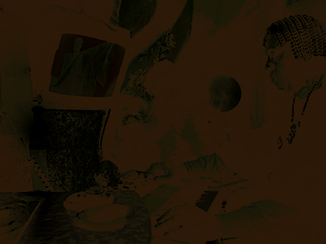
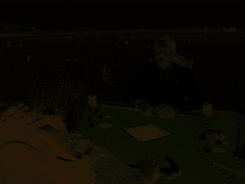
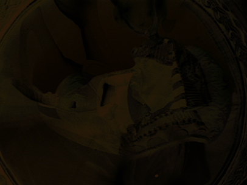
SUN RA & SPACE IS THE PLACE
Before he was a filmmaker, Sun Ra was a prophet, or at least, he believed he was. The jazz musician and bandleader born
Herman Poole Blount claimed that during a moment of deep spiritual concentration, he was transported to Saturn, where a
being told him to abandon formal education, that the world was heading toward chaos, and that only through his music could
humanity be reached. He took that seriously for the rest of his life.
In 1974, that vision became a film. Space is the Place, directed by John Coney and written by Sun Ra alongside Joshua Smith,
follows Sun Ra and his cosmic jazz ensemble, the Arkestra, as they discover a new planet and hatch a plan to transport African
Americans there entirely through the power of music.
Set in the early 1970s United States, the film does not flinch from what that means. Racial oppression, police violence, and the
quiet daily erasure of Black life are depicted not as backdrop but as the film's entire reason for existing.
Rather than imagining a future where Black people are finally included in the world as it exists, the film proposes something more
radical: building an entirely new one elsewhere, on their own terms, for themselves.
Decades later, that proposition still resonates. The underrepresentation of BIPOC communities both behind and in front of the
camera remains a persistent reality in the film industry, and the futures imagined on screen have largely been futures that did
not include them. Space is the Place was one of the first films to push back against that, and it became a catalyst for an entire
movement in art, literature, and film that we now call Afrofuturism.
AFROFUTURISM
The term Afrofuturism was not coined until the 1990s, but the movement had already been alive for decades before anyone gave it a name.
As far back as the 1950s, artists from the African diaspora were doing something that did not yet have a label: taking the alienation
they felt living in a world that excluded them and transforming it into something expansive, otherworldly, and radical.
They took the "alien" in alienation and made it literal.
At its core, Afrofuturism is a cultural movement that uses science fiction, technology, and speculative imagination to do two things
at once: reckon with the history of oppression faced by people of African descent, and envision a future liberated from it.
It is not escapism. It is a deliberate act of world-building by communities who have been written out of the futures that mainstream
culture imagines.
Space is the Place was one of the earliest and most literal expressions of that impulse on screen. In the decades that followed,
more films, novels, music, and art were produced under the same premises, and the movement grew. Today, Afrofuturism spans across
every creative discipline and continues to expand, earning the recognition it has long deserved.
Since Space is the Place, the list of Afrofuturist films has grown continuously, each one adding its own vision of what a liberated
Black future could look like.
The Brother From Another Planet (1984)
Director:
John Sayles
Screenwriter:
John Sayles
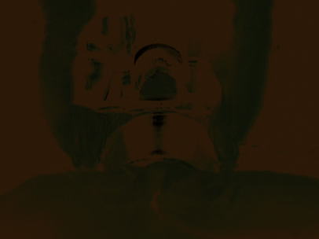
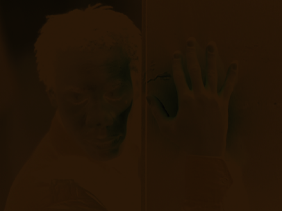
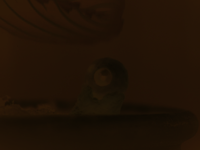
The Brother from Another Planet is a 1984 low-budget American science fiction film, with a legacy as a cult classic,
written and directed by John Sayles.
The film stars Joe Morton as an escaped extraterrestrial slave trying to find a new life on Earth. Due to an error
in proper copyright protocols, the film became part of the public domain during its original release.
The film was a moderate financial success, and critical reviews were largely positive. Morton's performance as The Brother
was acclaimed, as he had no lines of dialogue and had to communicate entirely through facial expressions and body language.
Get Out (2017)
Director:
Jordan Peele
Screenwriter:
Jordan Peele
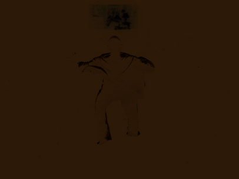
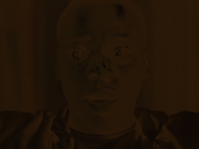
Get Out is a 2017 American psychological horror film written, co-produced, and directed by Jordan Peele in his directorial debut.
It stars Daniel Kaluuya, Allison Williams, Lil Rel Howery, LaKeith Stanfield, Bradley Whitford, Caleb Landry Jones, Stephen Root,
Catherine Keener, and Betty Gabriel. The plot follows a young black man (Kaluuya), who uncovers shocking secrets when he meets the
family of his white girlfriend (Williams).
Upon release, it was a critical and commercial success, grossing $259.8 million against a $4.5 million budget. At the 90th Academy
Awards, it was nominated for four awards, winning Best Original Screenplay.
Black Panther (2018)
Director:
Ryan Coogler
Screenwriter:
Ryan Coogler, Joe Robert Cole, and Stan Lee
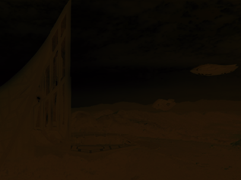
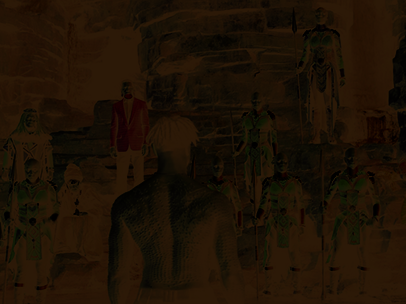
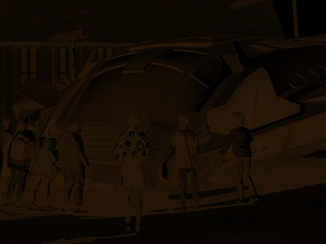
Black Panther is a 2018 American superhero film based on the Marvel Comics character of the same name. In Black Panther,
T'Challa is crowned king of Wakanda following his father's death, but he is challenged by Killmonger, who plans
to abandon the country's isolationist policies and begin a global revolution.
Black Panther was the first Marvel Studios film with a Black director and a predominantly Black cast. Many critics considered
the film to be one of the best in the MCU and it was noted for its cultural significance. It grossed over $1.3 billion worldwide
and broke numerous box office records, becoming the highest-grossing film directed by a Black filmmaker.
They Cloned Tyrone (2023)
Director:
Juel Taylor
Screenwriter:
Juel Taylor and Tony Rettenmaier
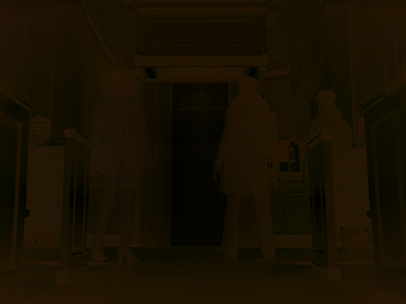
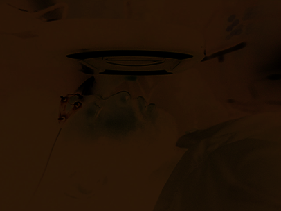
They Cloned Tyrone is a 2023 American science fiction comedy mystery film directed by Juel Taylor, in his feature film
directorial debut, from a screenplay he wrote with Tony Rettenmaier. It stars John Boyega, Teyonah Parris, and Jamie Foxx
(who also serves as a producer) as an unlikely trio uncovering a shadow government cloning conspiracy. David Alan Grier
and Kiefer Sutherland also appear in supporting roles.
They Cloned Tyrone premiered at the American Black Film Festival on June 14, 2023. It was released in limited theaters on
July 14, 2023, before being released by Netflix on July 21. The film received positive reviews from critics.
The rise of Afrofuturism has since inspired other alternate futurism among various underrepresented groups
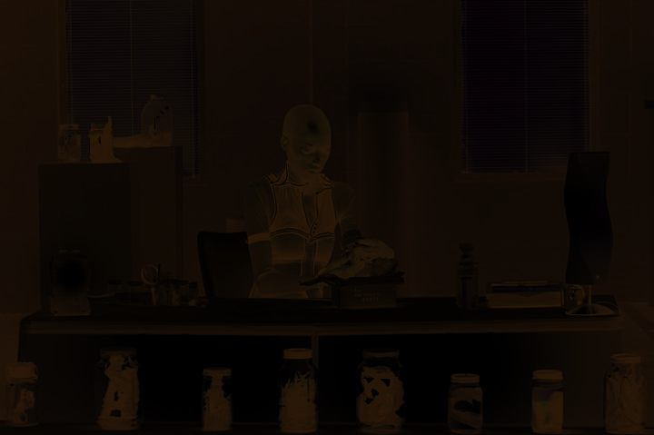
Pumzi (2009)
Africanfuturism
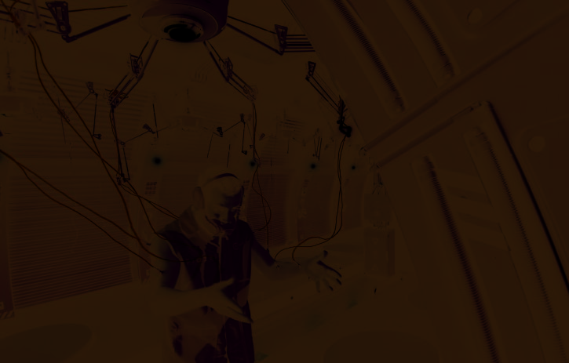
Sleep Dealer (2008)
Latinofuturism
Night Raiders (2021)
Indigenous Futurism
THE FUTURE BUILT BY US
Text Source
IMDb & Wikipedia
Image Source
[FILMGRAB] & IMDb